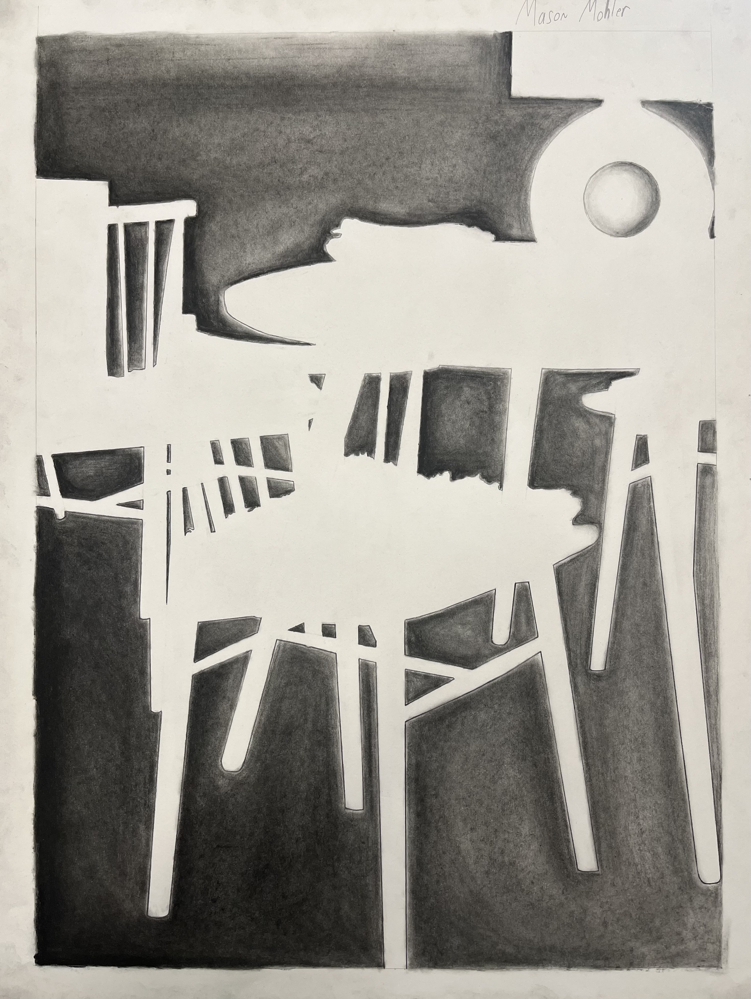

Material Used: Graphite
Material Used: Graphite

Negative Space Project for Basic Drawing
Materials Used: Graphite and Compressed Charcoal
Material Used: Hand-cut Paper
Materials Used: Charcoal and Compressed Charcoal
Material Used: Graphite

Material Used: Hand-cut Paper

Material Used: Ink Pens